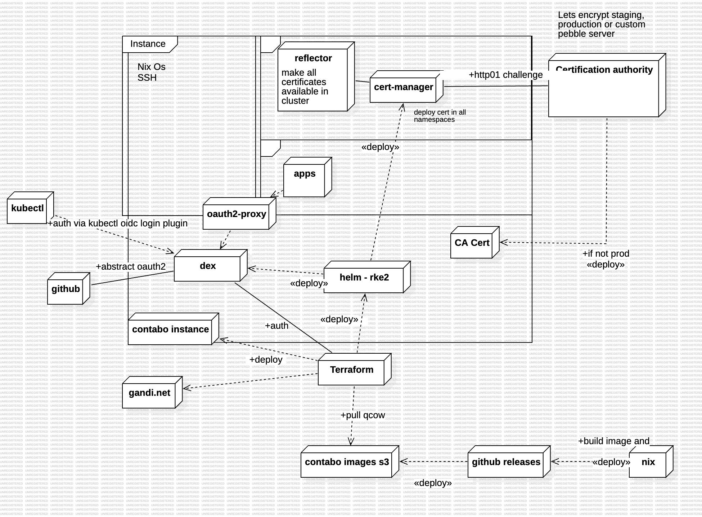

Print Site
Plateforme¶
Architecture¶

Requirements¶
Note: You could easily adapt terraform to use another provider, it just needs to support
user_datawith a cloud-init compatible syntax.
Applying¶
Follow the steps in README.md to apply the infrastructure.
Index¶
Install PaaS for debug on a single machine¶
This PaaS solution targets a contabo VPS or a local machine with libvirt. This one will be based on kubernetes for the containerization and dex for the k8S accesses and an oauth proxy for hosted web apps.
The optics of this tooling will follow :
-
The principle of immutable infrastructure with the idea of recreating rather than updating. Thus we will use ready linux iso to deploy the kubernetes / waypoint platform directly on a server.
-
The principle infrastructure as code (IaC) by keeping all the specification of our infrastructure in configurations and scripts. We will also use basic tests of our configurations.
For this we will use a technical base composed of :
rke2A Kubernetes distribution built for production workloads. It is a CNCF-certified Kubernetes distribution that provides a simple and easy-to-use installation process, as well as a number of features that make it well-suited for production environments.- Nix Os to create iso images of linux machines
- Terraform to control many cloud platforms like Gandi, Contabo, GitHub, kubernetes...
Note : Here we are only using single node mode
Secure ssh connections¶
After applying infrastructure to terraform you will be able to log in ssh with :
Help¶
FAQ¶
I tried several times the vm provision with different configurations forcing me to apply / destroy the stack several times. However, now I can't access the url with a dns error ?
It is probably the dns cache that returns the ip entry of an old vm because the time to live has not yet expired. For that in chrome we must clean this cache to make as if we had never been on the site. In your chrome browser chrome://net-internals/#dns do a "clear host cache" and try again.
Also you can use a global flush cache if it still doesn't work:
For real world testing, it's best to use different
dex_hostnameandpaas_hostnameentries that you don't use for one environment (staging or production).
Kubernetes on Vscode¶
To consolidate the debugging of our dev ops environment we can integrate our kubernetes cluster into the vscode IDE.
We will fetch the kubeconfig in our container that embeds K3s and the cluster.
Copy the kube config k3s with :
If you don't have kubectl locally:
Then we check with kubectl cluster-info which should give us the information of the k3s node.
Then on vscode use these user parameters to see and use the cluster¶
To show the path to home
cd ~ && pwd && cd -
And there you have access to an interface to control your cluster directly from vscode. Use this json configuration as much as you want in your application repositories to have a production-like experience.
Terragrunt cache download issues¶
error downloading 'file:///Users/loic/github.com/loic-roux-404/k3s-paas': open ../../../../../../.terragrunt-cache/Z69vkGsFyePH0e_F_c6nMmeBn8M/cyRBXgCPjBPxdp5zNnk4giC1NbU/result/Library/.terragrunt-source-manifest: permission denied
You've just initialized your nix darwin environment and result/ folder is owned by root. You can delete this folder or force rights on $USER to fix this.
Sources¶
Example: bootstrap the stack as a new user¶
The public plateforme flake builds the macOS control host (nix-darwin) and the NixOS VM images, but takes no secrets input. Your secrets live in a private wrapper repo that pins plateforme and injects your SOPS file at build time — the example/ directory in this repository is the template for that wrapper.
Full walkthrough: example/README.md.
Summary¶
your-dir/
├── plateforme/ # public clone (this repo)
└── secrets/ # copy of example/, your private wrapper repo
- Create the wrapper:
mkdir secrets && cd secrets && git init, thennix run github:loic-roux-404/plateforme#paas -- init .(installs this template from the flake — no plateforme checkout needed). - Age key:
ssh-to-age < ~/.ssh/id_ed25519.pub→ put the recipient insecrets/.sops.yaml. - Identity: set
user/githubUserinsecrets/flake.nix. - Secrets:
cp secrets-skeleton/darwin.yaml . && sops encrypt -i darwin.yaml(dummy values bootstrap fine; the AI stack is disabled by default — see the README to re-enable it). - macOS host:
make bootstrapinsecrets/. - Deploy from the wrapper:
./paas doctor,./paas build, then./paas tg cloud/local→./paas tg network/local(paas/apps layers = milestone 2). See 4-distribution.md for the fullpaasreference and the pin/override contract.
Why a wrapper repo¶
- Secrets stay private: plateforme is the public product, the wrapper is the only place ciphertext lives. One commit there rotates a secret — no plateforme change.
- The pin (
flake.lock) is your last-known-good bootstrap;make updatebumps it only after a greenmake bootstrap. PLATFORM_DIR=../plateforme make bootstrapvalidates a plateforme working tree through the wrapper before you bump the pin.
Validate the template¶
example/test.sh reproduces a fresh user (throwaway age key, dummy secrets)
and builds the darwin closure — no switch, safe to run anytime:
Distribution: consuming plateforme from a wrapper repo¶
plateforme is the product: nix flake, terraform modules, docs, agent
definitions, and the example/ template. All deployment orchestration lives
in a private wrapper repo (values + secrets only) initialized from
example/. The wrapper drives everything through one script:
paas.
Initialize a wrapper¶
mkdir my-wrapper && cd my-wrapper && git init
nix run github:loic-roux-404/plateforme#paas -- init .
paas init installs the packaged example/ template: paas + terragrunt/
are refreshed on every run, everything else (flake.nix, Makefile, .sops.yaml,
skeletons) only when absent — an existing wrapper never loses its values.
Then follow example/README.md steps 2-5 (age
recipient, identity, encrypted darwin.yaml/local.yaml, make bootstrap).
Wrapper layout after init:
├── flake.nix / flake.lock # pin: the `plateforme` input drives EVERYTHING
├── Makefile # bootstrap / update / doctor + paas delegation (build, reset, tg)
├── paas # deployment entrypoint
├── terragrunt/ # units: cloud/local, network/local (paas/apps = milestone 2)
├── local.yaml / prod.yaml / darwin.yaml # SOPS secrets (authored here)
├── result/ # generated: built qcow2
└── .terragrunt/ # generated: state + module cache
Pin / override contract¶
One lock (flake.lock, input plateforme) selects the plateforme revision
for the darwin bootstrap, the nix image builds, AND the terragrunt module
tree. Terraform fetches the modules itself — no local clone step.
PLATFORM_DIR |
nix ref | terragrunt source |
|---|---|---|
| unset (default) | github:loic-roux-404/plateforme/<rev> |
git::https://github.com/loic-roux-404/plateforme.git//<module>?ref=<rev> |
/path/to/plateforme |
path:/path/to/plateforme |
that working tree (local-path source) |
paas exports the pin as env vars (PLATEFORME_REV, PLATEFORME_REF) which
terragrunt/root.hcl reads — running terragrunt directly? Export them first
(the header comment in root.hcl shows the jq one-liner).
make update bumps the pin; bump only after a green make bootstrap +
paas reset. path: flakes see only git-tracked files — git add new
plateforme files before pointing PLATFORM_DIR at a working tree.
paas reference¶
paas build [TARGET] # NixOS qcow2 → result/nixos.qcow2
# TARGET: initial (default) | deploy | initial-contabo | deploy-contabo
paas tg <layer> [args] # terragrunt in terragrunt/<layer>, inside the plateforme
# devShell (terraform, terragrunt, sops, SOPS_AGE_KEY)
# e.g. paas tg cloud/local apply -auto-approve
paas doctor # OK/FAIL gates (pin, sops key, image pin marker, libvirt,
# dnsmasq, minio, pebble); non-zero exit on any FAIL
paas reset # destroy cloud → build initial → cloud → network,
# step logs in .agent/logs/<ts>-<step>.log
paas login # kubectl OIDC setup from the paas layer output (milestone 2)
paas init <dest> # copy paas + terragrunt/ into an existing wrapper repo
Makefile equivalents (same pin contract): make build, make reset,
make doctor, make tg LAYER=cloud/local ARGS='apply -auto-approve'.
Milestone 1 (cloud + network) is wired; paas/ and apps/ units follow the
same 4-line unit shape once local is green.
Deploy loop¶
nix run ../#paas -- doctor
nix run ../#paas -- reset # or step by step: build → tg cloud/local → tg network/local
nix run ../#paas -- tg network/local output -json k3s_config # kubeconfig
Failures: see the paas-debug-loop skill (per-layer gates, bounded-retry
protocol, CLICK NEEDED: browser fallback). Logs land in .agent/logs/.
Contabo / production¶
Same contract, different inputs: terragrunt/cloud/contabo + network/contabo
units (milestone 2, after local is green), prod.yaml secrets, x86 targets
(initial-contabo / deploy-contabo, need the linux-builder VM — see AGENTS.md
"Linux builder VM networking").